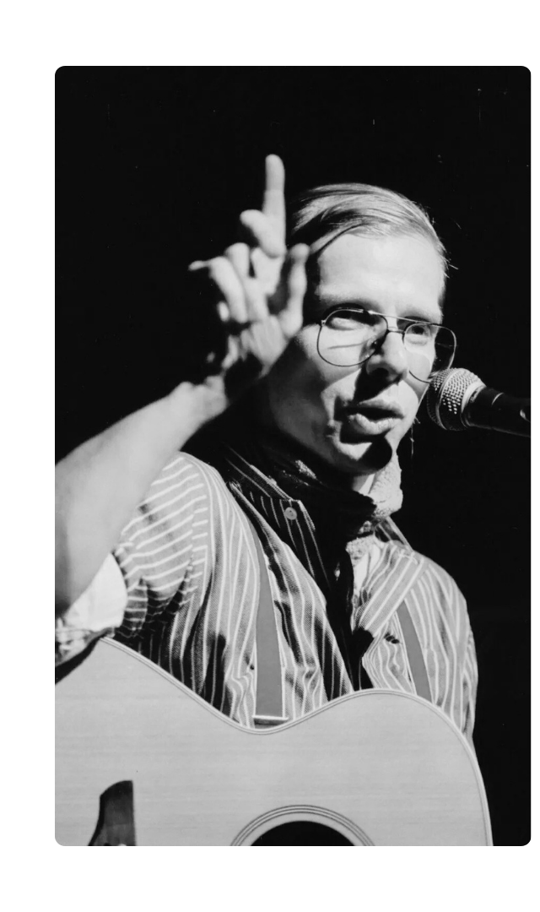
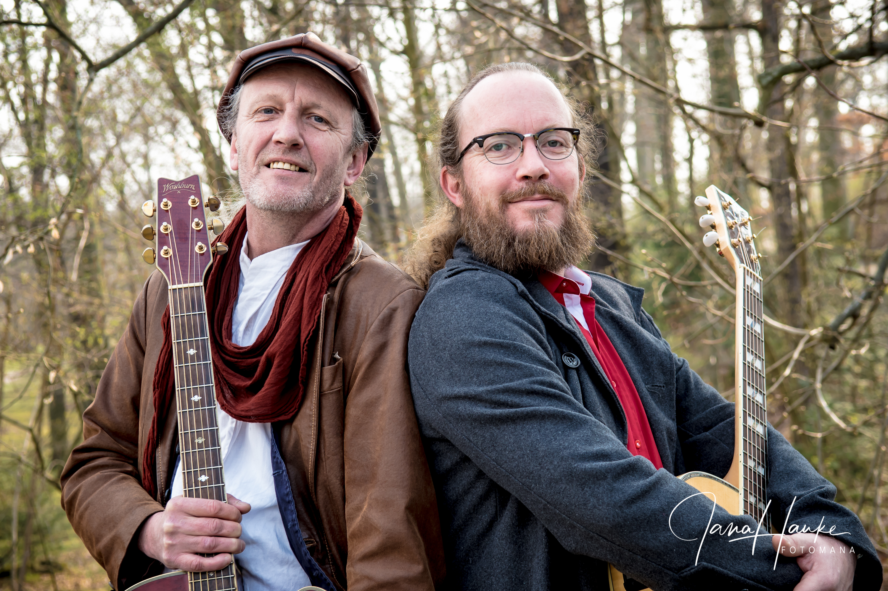
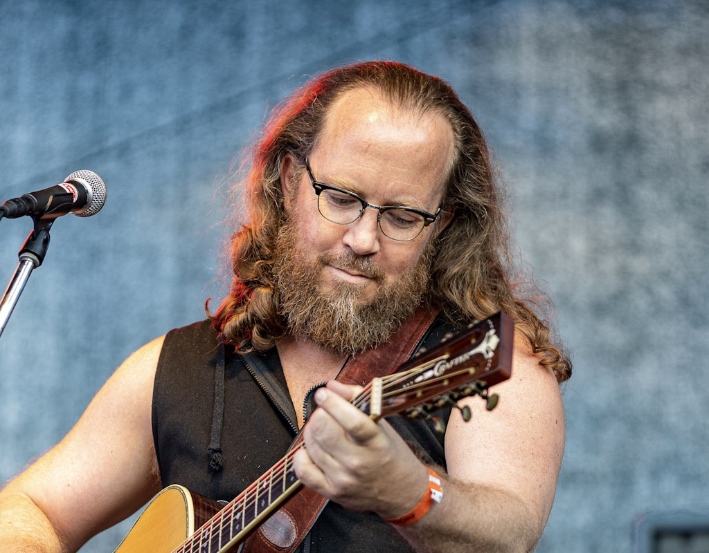
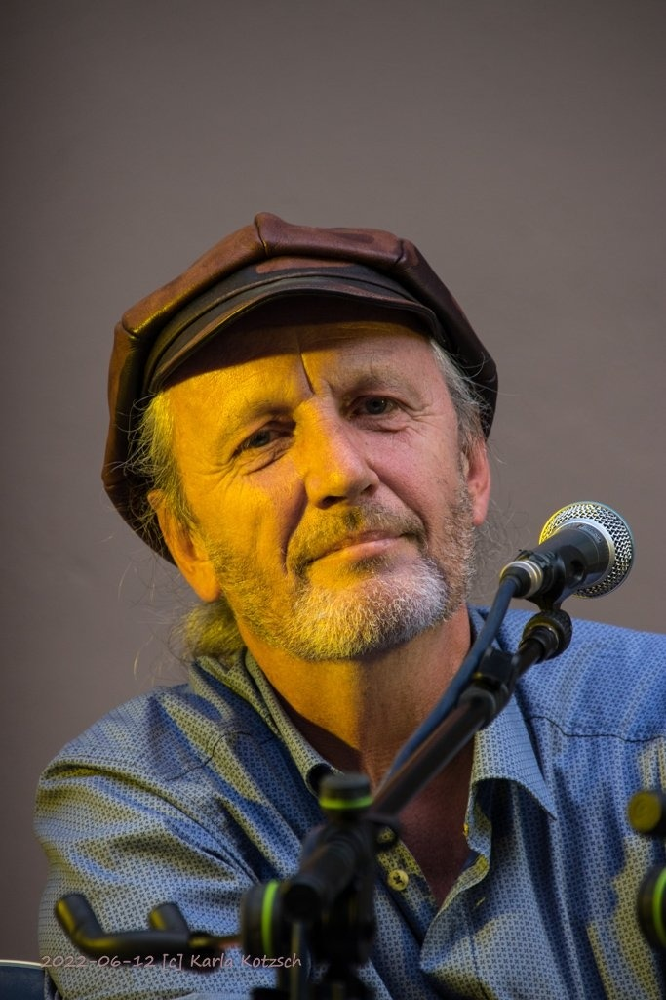

Axel Stiller und Uwe Kotteck verbindet eine langjährige Freundschaft, die Anfang der 2000er Jahre bei einer Session im Gerücht in Dresden-Laubegast begann. Beide haben Gerhard Gundermanns Lieder schon längst in ihre Soloprogramme aufgenommen — was lag da näher, als die Wege zu vereinen?
»Auf Gundermanns Wegen« vereint die Lieblingslieder von Gundi mit eigenen Stücken und Geschichten der beiden Musiker. Das Programm folgt dabei keinem festen Drehbuch — so bleibt es für Axel und Uwe selbst spannend und für das Publikum abwechslungsreich und amüsant.
Ob im kleinen Club, auf einer Kirchenbühne oder am Lagerfeuer — das Programm lebt von der Intimität des Moments. Zwei Gitarren, ein Klavier, Mundharmonikas und die gemeinsame Leidenschaft für Gundis Lieder.

Gerhard Gundermann war Liedermacher, Baggerführer und einer der bedeutendsten deutschsprachigen Songschreiber der zweiten Hälfte des 20. Jahrhunderts. In der Lausitz, mitten im Braunkohlenrevier, lebte und arbeitete er — und schrieb Lieder, die aus dieser Welt kamen und weit über sie hinausgingen.
Seine Texte sind ehrlich, sperrig und von außergewöhnlicher poetischer Kraft. Lieder über Liebe und Verlust, über die DDR und ihre Menschen, über das Arbeiten und das Zweifeln. Lieder, die kein Alter kennen.
»Gundis Lieder haben nichts von ihrer Schönheit, Sprödigkeit und Aktualität verloren.«
— Axel StillerGundermann starb 1998 im Alter von 42 Jahren. Seine Tochter Linda Gundermann führt sein musikalisches Erbe weiter — unter anderem im Bandprojekt »Linda und die lauten Bräute«, das Gundis Lieder mit denen der nächsten Generation vereint.


Axel Stiller ist seit über 20 Jahren musikalisch aktiv. Durch Gundermann und seine Lieder kam er zur deutschsprachigen Liedermacher-Musik — und über einige Umwege auch auf die Bühne.
Neben »Auf Gundermanns Wegen« ist Axel mit eigenen Soloprogrammen unterwegs, spielt Gundis Lieder in seinem Abend »Axel singt Gundi« und ist Teil des Bandprojekts »Linda und die lauten Bräute«.
Neben der Musik arbeitet Axel als Paarberater — was gelegentlich für den ein oder anderen Schwank zwischen den Liedern sorgt.
axelstiller.de
Uwe Kotteck steht seit 50 Jahren auf der Bühne — seit 30 Jahren mit eigenem Liederprogramm. Mit eigenen Stücken ist er auf Bühnen des ganzen Landes unterwegs, interpretiert Gundis Lieder in seinen Soloprogrammen und gestaltet literarische Lesungen mit Texten von Lene Voigt und Hermann Hesse.
Die musikalische Freundschaft mit Axel begann Anfang der 2000er bei Sessions im Gerücht in Dresden-Laubegast. Was zunächst gemeinsame Abende unter Kollegen waren, ist längst zu einem festen Programm geworden — jedes Konzert entsteht neu, offen und ohne festes Drehbuch.